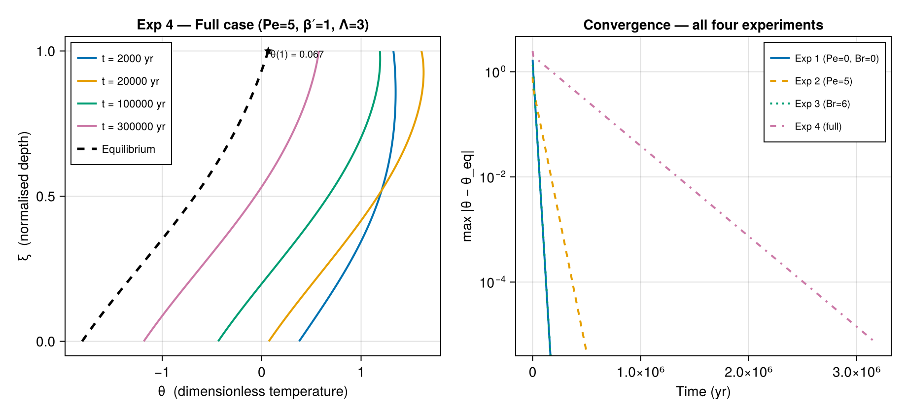

Exp 4 — Full case
Parameters: Pe = 5, Br = 0, γ = 2, β′ = 1, Λ = 3
Physical interpretation
Experiment 4 combines three effects not present simultaneously in Exps 1–3:
- Pe = 5 — upward advection (ablation zone), as in Exp 2.
- β′ = 1 — Robin surface BC with $\beta = L = 1000$ m, modelling partial thermal insulation at the surface (e.g., a thin snow/firn layer or a prescribed surface-flux condition instead of a fixed temperature). With β′ > 0 the surface temperature is not pinned: $\beta'\,\theta_\xi(1) + \theta(1) = 1$.
- Λ = 3 — horizontal heat advection adds a uniform source $\Omega = \Lambda = 3$, mimicking warm-air advection from lower latitudes.
The combination of a Robin BC and Pe > 0 produces the most complex eigenvalue structure of the four experiments: eigenvalues are found by solving the full Eq. A8 numerically with both Kummer function terms active.
Because β′ = 1 (Robin BC), $\theta(1) \ne 1$ in general — the surface temperature adjusts to balance the thermal insulation. Run sol_eq.theta_eq[end] to see the actual surface value.
Example
using IceColumnSolutions, CairoMakie
par = benchmark(:exp4)
sol_eq = solve(par; nz=100)
T0 = 230.0
ts = [2_000.0, 20_000.0, 100_000.0, 300_000.0]
sol = solve(par, ts; init=uniform(T0), n_modes=5, nz=100)
fig = Figure(size=(920, 420))
ax1 = Axis(fig[1,1],
xlabel = "θ (dimensionless temperature)",
ylabel = "ξ (normalised depth)",
title = "Exp 4 — Full case (Pe=5, β′=1, Λ=3)")
colors = Makie.wong_colors()
for (j, t) in enumerate(ts)
lines!(ax1, sol.theta[:, j], sol.zeta;
color=colors[j], linewidth=2, label="t = $(Int(t)) yr")
end
lines!(ax1, sol_eq.theta_eq, sol_eq.zeta;
color=:black, linestyle=:dash, linewidth=2.5, label="Equilibrium")
# mark surface θ(1)
θ_surf = sol_eq.theta_eq[end]
scatter!(ax1, [θ_surf], [1.0]; color=:black, markersize=10, marker=:star5)
text!(ax1, θ_surf + 0.02, 0.97;
text="θ(1) = $(round(θ_surf, digits=3))",
color=:black, fontsize=10)
axislegend(ax1; position=:lt, labelsize=11)
ax2 = Axis(fig[1,2],
xlabel = "Time (yr)",
ylabel = "max |θ − θ_eq|",
title = "Convergence — all four experiments",
yscale = log10)
ts_d = exp10.(range(2.5, 6.5, length=60))
kappa_yr = par.kappa * 365.25 * 24 * 3600
labels = ["Exp 1 (Pe=0, Br=0)", "Exp 2 (Pe=5)", "Exp 3 (Br=6)", "Exp 4 (full)"]
exps = [:exp1, :exp2, :exp3, :exp4]
nmodes = [12, 5, 12, 5]
lstyles = [:solid, :dash, :dot, :dashdot]
for (sym, nm, ls, lab, col) in zip(exps, nmodes, lstyles, labels, Makie.wong_colors())
p = benchmark(sym)
s = solve(p, ts_d; init=uniform(T0), n_modes=nm, nz=80)
d = [maximum(abs.(s.theta[:,j] .- s.theta_eq)) for j in eachindex(ts_d)]
lines!(ax2, ts_d, d; color=col, linestyle=ls, linewidth=2, label=lab)
end
axislegend(ax2; position=:rt, labelsize=10)
fig
Notes
- The Robin BC (β′ = 1) raises the equilibrium surface temperature above the pure-Dirichlet value of 1 (compare the star marker to θ = 1).
- Horizontal advection (Λ = 3) raises the entire profile relative to Exp 2, just as strain heating does in Exp 3.
- The right panel compares all four experiments. Exp 4 converges even more slowly than Exp 2 because the Robin BC changes the eigenvalue spectrum.
n_modes = 5is used for Exps 2 and 4 (Pe > 0) to keep build time reasonable; the first few modes dominate for all shown times.